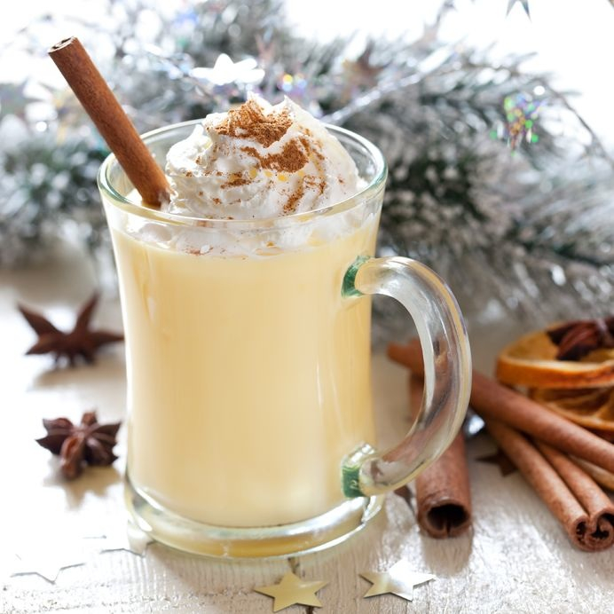
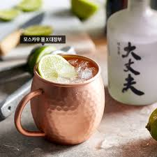
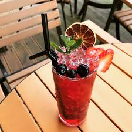
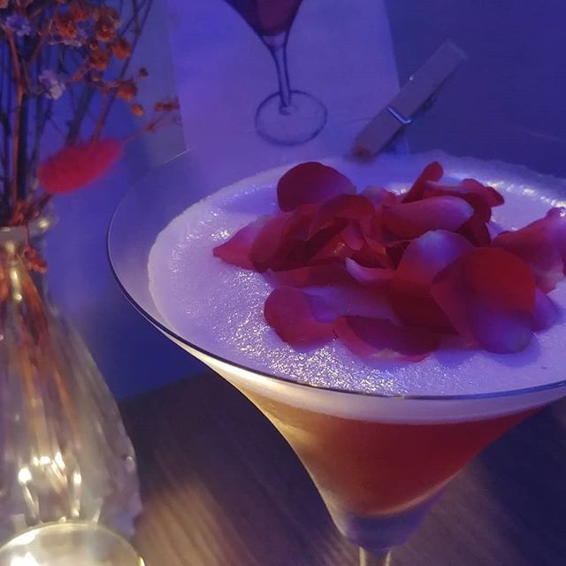

칵테일 이름에 대한 유래
-
- 칵테일의 유래
- 미국 독립전쟁 당시 혼합음료에 수탉의 꼬리가 있는 것을 보고 병사가 멋있군(cock's tail)이라는 말을 한 것에서 유래되었다고 한다.
-
- 스크류 드라이버의 유래
- 보드카를 오렌지 주스 통에 넣어서 드라이버로 저어 마셨다 해서 붙여진 이름이다.
-
- 블랙러시안
- 블랙러시안이라는 이름은 공산당의 종주국인 러시아가 빨강에 대항하는 의미로 붙여진 것이다.
-
- 롱 아일랜드 아이스티
- 미국의 유명한 휴양지를 연상하게 되어 시원한 감을 주며 색이 아이스티와 같다하여 붙여진 이름이다.
칵테일 레시피 알아보기
- 보드카 토닉만들기
-
재료 : 보드카, 진저에일, 레몬, 자몽, 로즈메리
- 1. 샷잔 두 개 분량의 보드카를 붓는다.
- 2. 레몬 반 개 분량을 즙을 내어 넣는다.
- 3. 진저에일을 부은 뒤, 로즈메리로 마무리
- 모히또만들기
-
재료 : 민트잎, 라임, 설탕, 화이트럼, 탄산수
- 1. 컵에 설탕을 1t정도의 양을 넣어줍니다.
- 2. 민트와 설탕, 라임 즙이 잘 어우러지도록 누르며 만들어 줍니다.
- 3. 얼음과 화이트 럼을 넣어주고 탄산수를 적당량 채워줍니다.

- 에그녹만들기
-
재료 : 럼, 계란, 우유, 생크림, 시나몬, 넛맥가루, 바닐라 익스트랙
- 1. 계란 노른자 5개와 설탕 1/3을 잘 섞습니다.
- 2. 우유 400ml, 시나몬, 넛맥, 바닐라 1t를 넣고 중탕해줍니다.
- 3. 불을 끈 뒤 생크림 3/4컵, 럼1컵을 넣고 잘 섞어줍니다.
- 클래식 핫 토디만들기
-
재료 : 꿀, 레몬주스, 잭다니엘
- 1. 소스팬에 물을 넣고 끓여줍니다.
- 2. 끓인 물에 꿀을 원하는 만큼 넣고 레몬주스 2t를 넣습니다.
- 3. 위스키(잭다니엘)과 함께 넣고 섞어줍니다.

- 모스카우 뮬만들기
-
재료 : 진저에일, 라임/레몬주스, 보드카
- 1. 라임 주스 약간과 보드카를 섞어줍니다.
- 2. 컵에 얼음을 넣고 나머지를 진저에일로 채워줍니다.
- 3. 가니쉬로 라임 한 쪽이나 민트잎을 더 해줍니다.

- 로제타만들기
-
재료 : 생제르맹, 로제샴페인, 미니장미
- 1. 샴페인잔에 장미한송이를 넣어줍니다.
- 2. 컵에 엘더플라워 향이 가득한 생제르맹과 로제샴페인을 1:3비율로 따라줍니다.

- 애플민트 하이볼만들기
-
재료 : 설탕, 애플민트, 탄산수, 레몬즙, 위스키
- 1. 애플민트를 뜯어서 컵이나 그릇에 담아줍니다.
- 2. 설탕을 넣어 녹여준 뒤, 레몬즙을 붓고 고르게 섞어줍니다.
- 3. 설탕이 녹으면 컵에 담고 탄산수, 위스키 순으로 부어줍니다.

- 물랑루즈만들기
-
재료 : 라즈베리, 라임, 생제르맹, 바닐라에센스, 허브
- 1. 글라스에 라즈베리, 라임즙을 넣어줍니다.
- 2. 생제르맹과 호세를 넣고 얼음을 반정도 채워줍니다.
- 3. 잘 저어준 뒤 바닐라 에센스를 뿌리고 얼음을 가득채웁니다.